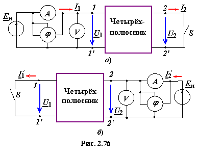
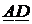
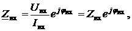
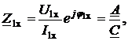
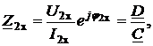
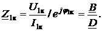
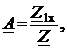
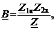
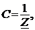
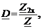

При проведении опытов ХХ и КЗ измерительные приборы включают только на входе или только на выходе ЧП (рис. 2.76).

Для пассивных ЧП (согласно теореме взаимности) коэффициенты уравнений А-формы связаны соотношением
 −  , (2.123)
, (2.123)
поэтому для определения четырёх коэффициентов (А, В, С и D) достаточно провести три опыа, например, два опыта ХХ (при прямом и обратном включении ЧП) и один опыт КЗ (обычно при прямом включении).
Методика расчёта коэффициентов A-формы заключается в следующем. По результатам измерений Uвх, Iвх и φвх (см. рис. 2.76) определяют входные комплексные сопротивления для каждого из трёх опытов:

где Zвх = Uвх / Iвх − модуль
входного сопротивления, определяемый по показаниям вольтметра и амперметра; ±φвх = Ψu − Ψi − сдвиг фаз между входными напряжением и током, определяемый по показанию измерителя разности фаз φ или косвенно при помощи осциллографа или ваттметра (φ = arccos(P / UI)).
Итак, из опытов ХХ при прямом (I2 = 0, рис. 2.76а) и обратном (I1 = I1х = 0, рис. 2.76б) включениях имеем
 
а из опыта КЗ при прямом включении (U2 = 0, рис. 2.76а, ключ S замкнут)

Решая полученные уравнения совместно с уравнением (2.123) относительно искомых коэффициентов, получим
  
где
П р и м е ч а н и е. Для определения коэффициентов А-формы симметричного ЧП достаточно провести два опыта (обычно опыты ХХ и КЗ при прямом включении), так как для него коэффициент А = D, а уравнение связи коэффициентов между собой имеет вид: A2 −  . Для активных ЧП необходимо провести четыре опыта (два опыта ХХ и два опыта КЗ).
. Для активных ЧП необходимо провести четыре опыта (два опыта ХХ и два опыта КЗ).